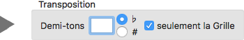

Transposition
Le bouton  permet de composer la description de la grille d'accords de la chanson sélectionnée. La Grille est affichée dans le panneau de droite.
permet de composer la description de la grille d'accords de la chanson sélectionnée. La Grille est affichée dans le panneau de droite.
Lors de cette composition, il est possible d'effectuer simultanément une transposition de la description définie.
Définir la Transposition
À droite du bouton de composition, on définit la Transposition à effectuer :

À droite du bouton de composition, on définit la Transposition à effectuer.
- On fixe nombre de demi-tons en plus ou en moins : un entier positif ou négatif.
- On choisit l'utilisation de bémol ou dièse.
- On indique si on doit modifier le code original de la description.
Attention :
- Si la case "seulement la Grille" est cochée (option par défaut) :
Alors, le code de description original est conservé, mais la grille affichée est transposée.
- Si la case "seulement la Grille" n'est pas cochée :
Alors, le code de description est remplacé par le code de description transposé qui a produit la grille affichée.
Dans ce cas : le code de description original est considéré comme dernière description valide, et donc, récupérable par un clic sur le petit bouton  apparu à droite du titre de la chanson.
apparu à droite du titre de la chanson.